2026 IndyCar Series Standings: Hal
Visual breakdown of the 2026 full season IndyCar standings predictions by Hal.
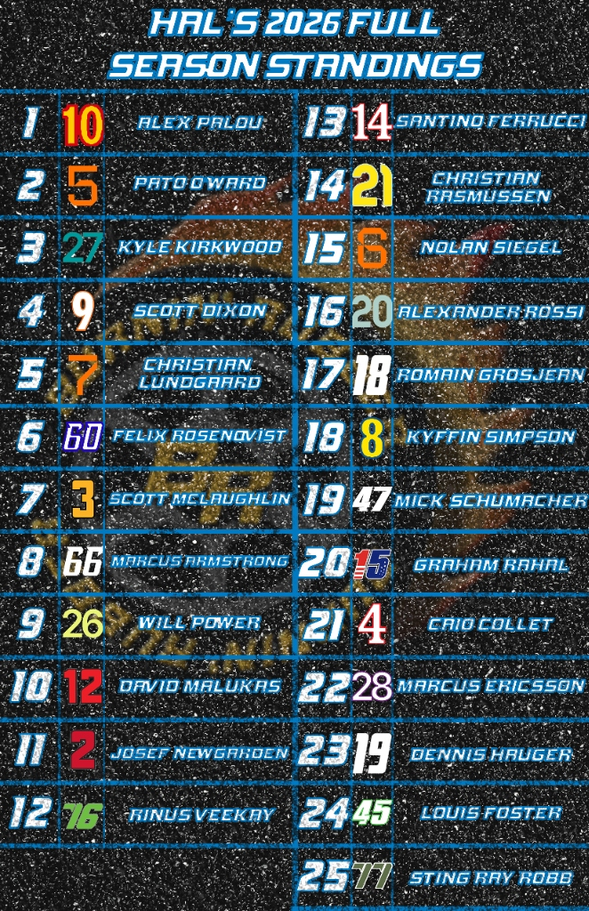
Medill Reporter | Motorsports Journalist
I am a Medill graduate student focused on motorsports, sports journalism and live production. I graduated from the University of Missouri in 2023 and have worked with major outlets including FOX Sports, Big Ten Network and the SEC Network. I also co-host and produce the biweekly Burnin' Rubber racing podcast, where I recap racing news, and analysis multiple series.
My journalism is driven by a belief that everyone in and out of the paddock has a story to tell. I pride myself on having a pulse to what is important to fans and readers alike while being able to give valuable insight into the people in front and behind the camera.
My experience include a trip to the Daytona 500 and several weekends at Kansas Speedway. During my time at FOX Sports I worked on NASCAR-focused content creation, race archive research and audience engagement through digital and social platforms, all of which inform my reporting approach.
Beyond motorsports, I have supported hundreds of collegiate athletic live productions and reported for the Columbia Missourian. In addition I have on-air and production experience at KCOU 88.1 FM, where I called several Missouri athletic events including two SEC football games and the 2022 Women's NIT opening round.
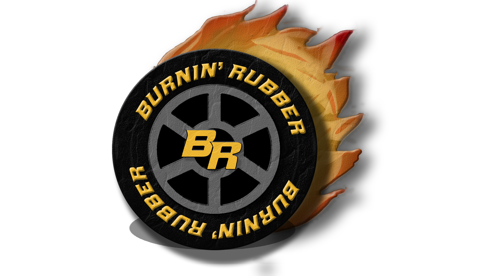
Welcome to the Burnin' Rubber Racing Podcast Season 7! Co-Hosts Sterling Price, Hal Estep and Justin Parmer break down all the highlights and news developments you know from around the racing world.
Join us every Monday during the racing season as we recap the high's and lows of the on track action in NASCAR, Indy Car and Formula One.
Then on Wednesday be sure to join us, as we break down all the news and developments from across the world of motorsports.
Visual breakdown of the 2026 full season IndyCar standings predictions by Hal.

Visual breakdown of the 2026 full season IndyCar standings predictions by Justin.
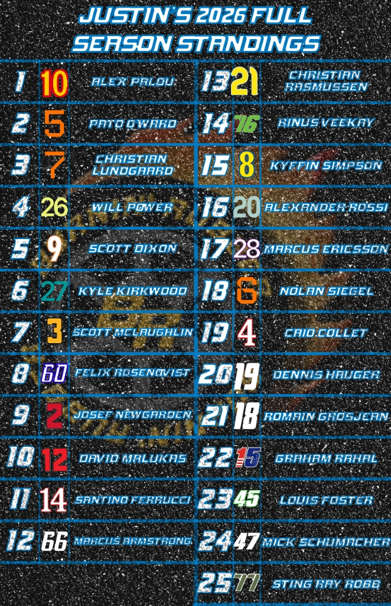
Visual breakdown of the 2026 full season NASCAR standings predictions by Justin.
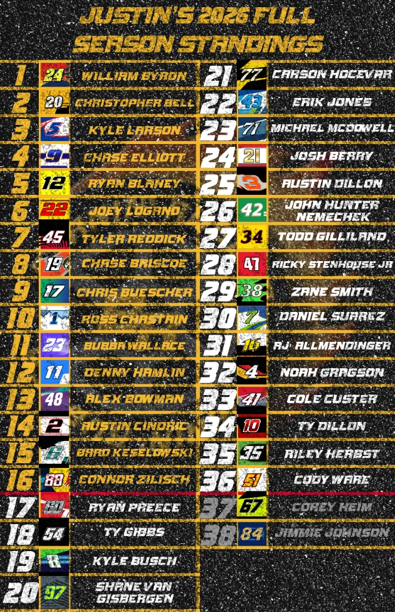
Visual breakdown of the 2026 full season NASCAR standings predictions by Hal.
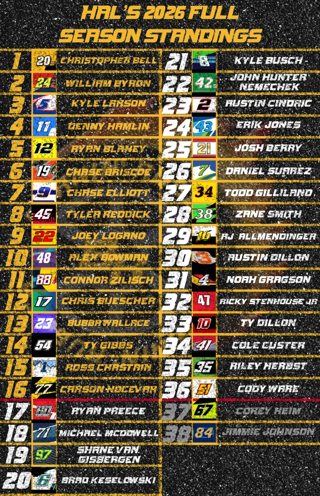
Visual breakdown of the 2026 full season IndyCar standings predictions by Sterling.
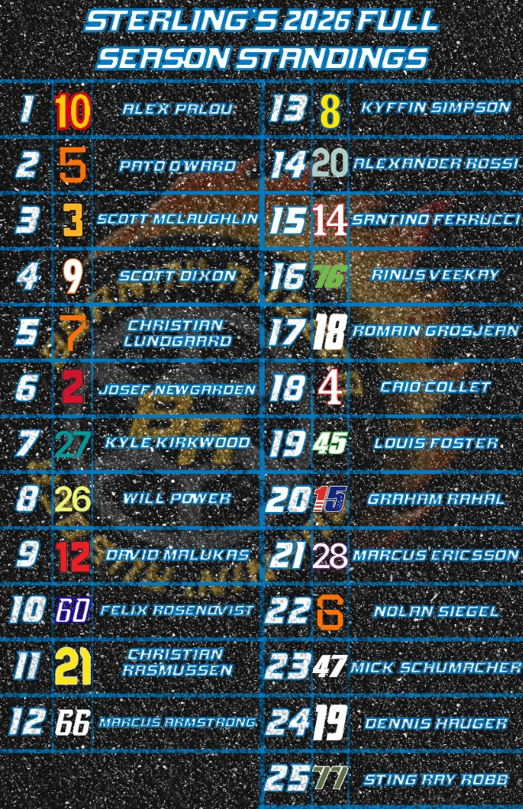
Visual breakdown of the Cup Series playoff standings heading into the Round of 8 at Martinsville,
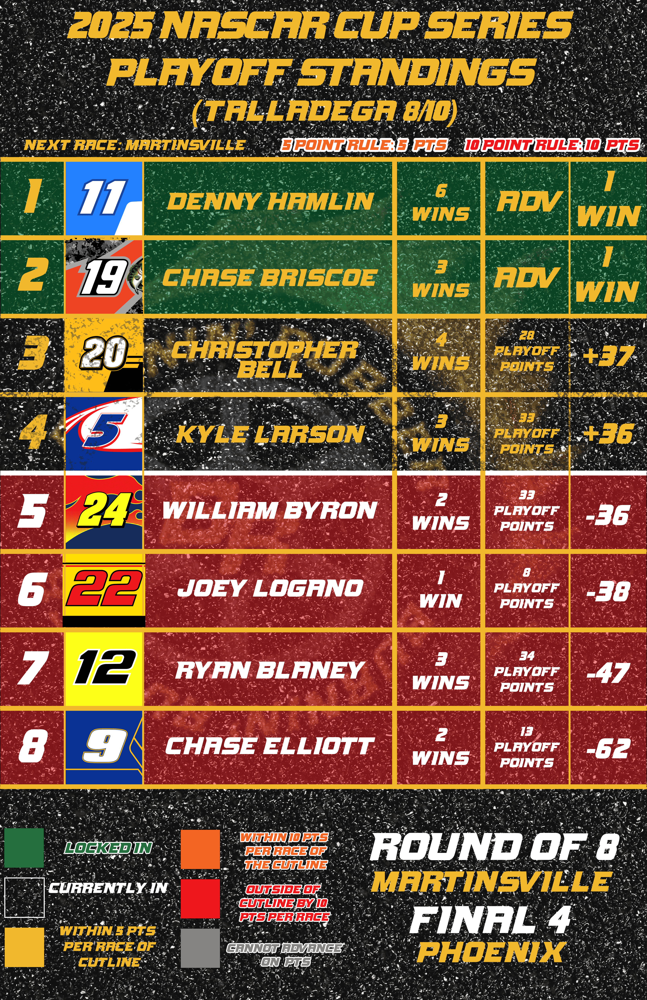
Description of your data project, interactive graphic, or digital storytelling piece. What tools did you use? What did you discover? Include technical details that demonstrate your skills.
Tools: Python, D3.js, Tableau, etc.
Summary of significant class project from your Medill coursework. What was the assignment? What was your approach? What did you learn?
Course: [Course Name] | [Quarter/Year]
Another project showcasing your data skills, coding abilities, or innovative storytelling. This could be a chart library, web scraper, or analysis project.
Tools: R, JavaScript, SQL, etc.
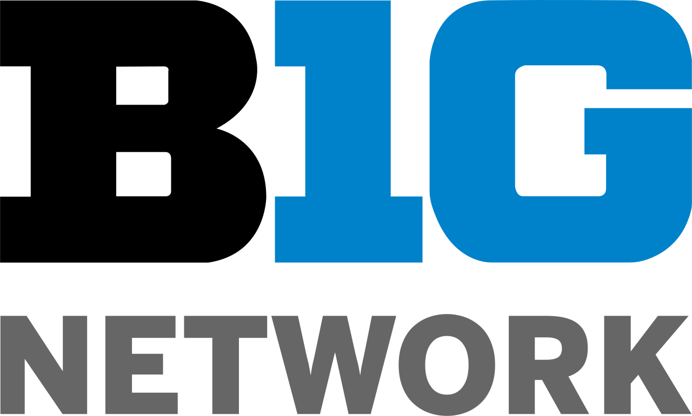
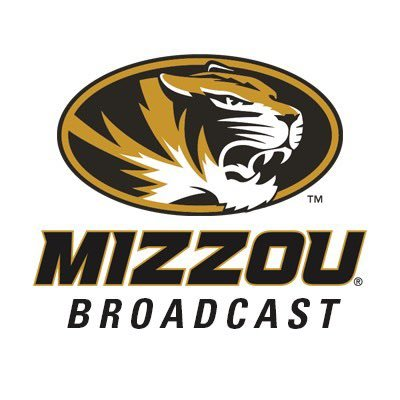
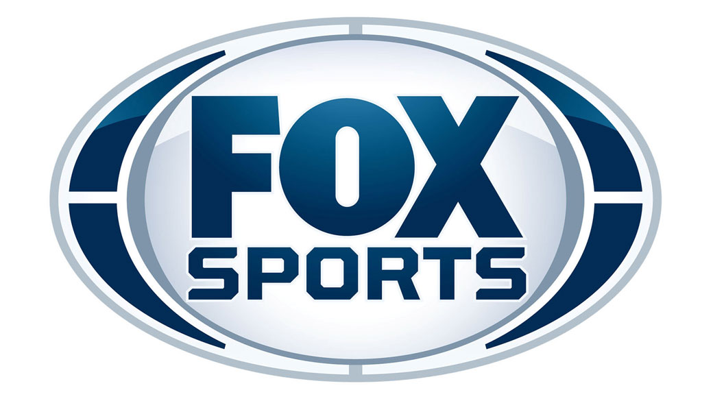
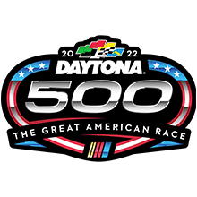
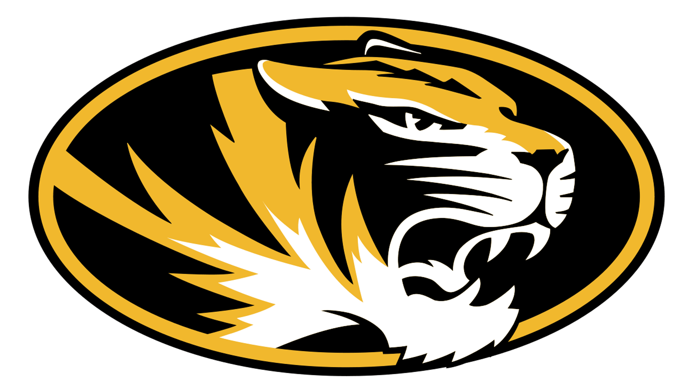
Feel free to reach out by email, phone or social media.